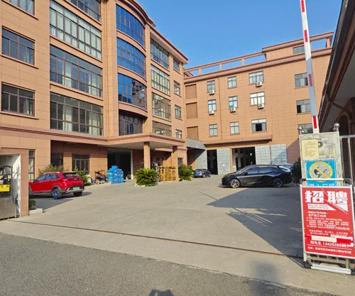

Raccords tournants hydrauliques sur mesure pour pelles, grappins et enrouleurs marins
Begapunk fabrique des raccords tournants sur mesure pour huile hydraulique. La configuration habituelle comporte 2 passages ; les versions sur mesure peuvent en comporter jusqu’à 12. Nous étudions et fabriquons des unités jusqu’à 30 MPa (300 bar / ≈ 4 350 psi). Cette valeur est le plafond de notre offre sur mesure : elle ne constitue ni une pression nominale applicable à chaque produit en stock, ni une conversion des caractéristiques du catalogue pneumatique.
Pour pelles, grappins et enrouleurs marins
Pelles hydrauliques
Raccords tournants pour les circuits d’huile hydraulique des pelles. Transmettez la pression et la vitesse de fonctionnement afin que nous puissions vérifier l’encombrement disponible et le nombre de passages.
Grappins à grumes et à bois
Raccords tournants sur mesure pour les circuits hydrauliques de grappins à grumes et à bois. La configuration habituelle comporte 2 passages ; nous déterminons avec vous si des passages supplémentaires sont nécessaires.
Enrouleurs marins et manutention de bobines
Raccords tournants pour huile hydraulique destinés aux enrouleurs marins et aux équipements de manutention de bobines. Le type de mouvement, continu, indexé ou oscillant, est pris en compte dès la première étude.
Comment nous étudions votre besoin hydraulique
Échanges directs entre ingénieurs. Indiquez d’abord la pression et la vitesse de fonctionnement ; nous préciserons ensuite les autres données nécessaires.
-
1
Transmettez la pression et la vitesse
Indiquez la pression de fonctionnement en bar et psi, ou en MPa, ainsi que la vitesse en tr/min ou le type de mouvement indexé ou oscillant.
-
2
Étanchéité et nombre de passages
Nous dimensionnons l’empilage de bagues Glyd en PTFE renforcé de fibres de carbone et le nombre de passages : 2 dans la configuration habituelle, jusqu’à 12 sur mesure.
-
3
Orifices, encombrement et faisabilité
Nous validons les orifices, l’encombrement disponible et la faisabilité de fabrication pour vos conditions de fonctionnement.
-
4
Quantité minimale : 1 pièce, fabrication sous 30 jours
Une seule pièce suffit pour démarrer. La fabrication hydraulique sur mesure est achevée dans un délai de 30 jours calendaires après paiement. Cette offre est distincte des modèles pneumatiques du catalogue, dont le délai indicatif est d’environ 20 jours.
Deux offres à bien distinguer
Le modèle du catalogue dont le plan indique 1 MPa ne doit pas être confondu avec un raccord sur mesure étudié jusqu’à 30 MPa pour une pelle.

Air, huile et eau selon le plan : BP-1P-0003
BP-1P-0003 est le modèle publié au catalogue dont le plan mentionne l’air, l’huile et l’eau, avec les valeurs publiées de 1 MPa / 500 tr/min. Consultez sa page produit pour les caractéristiques officielles. La présente page ne lui attribue aucune autre pression hydraulique : ce modèle n’est pas le raccord sur mesure pour pelle étudié jusqu’à 30 MPa.
Solution hydraulique haute pression sur mesure
Fluide : huile hydraulique. Étanchéité par bague Glyd en PTFE renforcé de fibres de carbone. Étude et fabrication jusqu’à 30 MPa (300 bar / ≈ 4 350 psi). Configuration habituelle à 2 passages, avec jusqu’à 12 passages sur mesure. Quantité minimale : 1 pièce. Les 30 MPa constituent un plafond pour l’offre sur mesure, et non une pression nominale applicable à toutes les unités.
Une fabrication assurée dans notre usine
Les raccords tournants hydrauliques sur mesure sont fabriqués sur notre site de Ningbo. Consultez nos pages consacrées à la fabrication et à la qualité, ainsi qu’au contrôle de production et aux essais d’étanchéité.
Le contrôle d’étanchéité de production standard des modèles du catalogue est réalisé à l’air comprimé à 1,0 MPa. Il ne s’agit pas d’un essai hydraulique à 30 MPa. Les critères de réception hydraulique sont définis par écrit pour chaque commande.

Informations à transmettre
Commencez par la pression et la vitesse de fonctionnement. Des informations incomplètes suffisent pour une première étude.
| Ce que vous pouvez transmettre | Ce que cela nous permet de vérifier |
|---|---|
| Pression de fonctionnement (bar et psi, ou MPa) | Compatibilité de l’application avec le plafond sur mesure de 30 MPa (300 bar / ≈ 4 350 psi) |
| Vitesse (tr/min ou mouvement indexé / oscillant) | Dimensionnement de l’étanchéité et faisabilité du mouvement continu ou intermittent |
| Fluide, s’il ne s’agit pas d’huile hydraulique | Confirmation que la demande relève de cette offre, ou nécessité d’une étude de compatibilité distincte |
| Nombre de passages (2 typiques, jusqu’à 12 sur mesure) | Architecture des circuits |
| Orifices et encombrement disponible | Interfaces de raccordement et dimensions du corps |
Besoin d’un raccord tournant hydraulique sur mesure ?
Transmettez la pression et la vitesse de fonctionnement. Nous étudions tous les types de demandes hydrauliques : pelles, grappins, enrouleurs marins et autres fonctions hydrauliques.
Questions sur les raccords tournants hydrauliques
Begapunk fabrique-t-il des raccords tournants hydrauliques ?
Oui. Begapunk fabrique des raccords tournants sur mesure pour huile hydraulique. La configuration habituelle comporte 2 passages et les versions sur mesure peuvent en comporter jusqu’à 12. Nous étudions et fabriquons des unités jusqu’à 30 MPa (300 bar / ≈ 4 350 psi). Cette valeur est un plafond pour l’offre sur mesure, et non une pression nominale applicable à chaque produit.
S’agit-il de la gamme pneumatique du catalogue ?
Non. Les 16 modèles publiés au catalogue sont presque tous destinés à l’air comprimé et utilisent des joints PTFE avec joints toriques. Seul le plan du BP-1P-0003 mentionne l’air, l’huile et l’eau, avec les valeurs publiées de 1 MPa et 500 tr/min. Il s’agit d’une offre distincte de la solution hydraulique sur mesure jusqu’à 30 MPa.
Quel joint utilisez-vous pour cette solution hydraulique sur mesure ?
Cette solution hydraulique sur mesure utilise une bague Glyd en PTFE renforcé de fibres de carbone, c’est-à-dire une bague de glissement en PTFE renforcé de fibres de carbone.
Quelle est la quantité minimale et quel est le délai ?
La quantité minimale est de 1 pièce. La fabrication hydraulique sur mesure est achevée dans un délai de 30 jours calendaires après paiement. Le délai indicatif des modèles pneumatiques du catalogue reste d’environ 20 jours ; ce délai de 20 jours ne s’applique pas à cette offre hydraulique sur mesure.
Quelles données transmettre en premier ?
Indiquez d’abord la pression de fonctionnement, en bar et psi ou en MPa, ainsi que la vitesse, en tr/min ou sous forme de mouvement indexé ou oscillant. Une fiche de fonctionnement ou un croquis suffit pour commencer l’étude.
Acceptez-vous les demandes de tous les secteurs ?
Oui. Nous étudions tous les types de demandes hydrauliques : pelles, grappins à grumes et à bois, enrouleurs marins, équipements de manutention de bobines et autres fonctions hydrauliques. Transmettez-nous les conditions de fonctionnement.